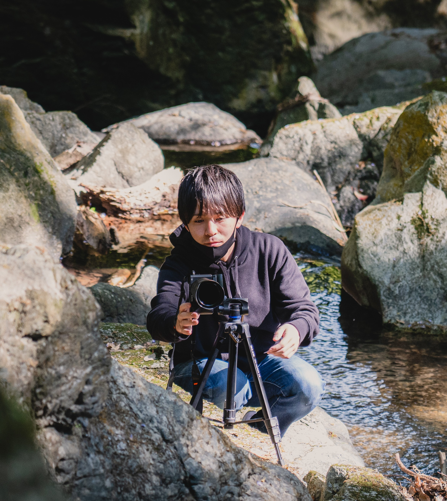

PROFILE
一人ひとりのご依頼に、丁寧に・全力で向き合う。
福岡を拠点に、出張撮影・映像制作・SNS運用代行を手がけるクリエイティブスタジオです。
個人で運営しているスタジオだからこそ、企画から撮影、編集、納品まで一貫して同じ担当者が対応します。
一つひとつのご依頼に、丁寧に向き合うことを大切にしています。
屋号
FUKUOKA_G_STUDIO
代表
西山 卓也
事業形態
個人事業
所在地
福岡県宗像市日の里
事業内容
出張撮影 / 映像制作 / SNS運用代行
対応エリア
全国
開業
2026年8月31日 開業予定

代表
Takuya Nishiyama
本業は現役のプログラマー。そこからカメラの道へ足を踏み入れました。
コードと向き合う中で培った「細部へのこだわり」と「課題を分解して考える力」は、そのまま撮影や編集にも活きています。ロジックを組み立てるように、一枚の写真、一本の映像を組み立てていく。そんな感覚で仕事に向き合っています。
撮影・映像制作・SNS運用を通じて、依頼してくださった方の「伝えたいもの」を、確かなかたちにしていきます。
※Googleフォームが開きます